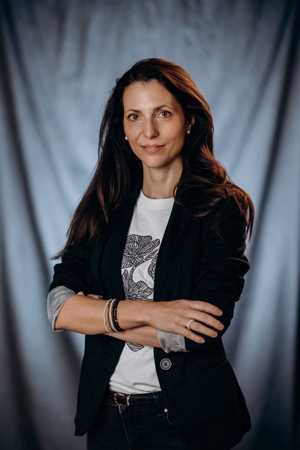

Face reading:
what your face says about you
YourFaceTalk offers professional face reading consultations with certified Face Reader Elina Bozhimirova. A reading looks at the lasting features of your face to describe your character, your natural strengths and the way you make decisions — online via Zoom or in person in Varna, Bulgaria.

What is face reading?
Face reading — historically known as physiognomy — is the practice of reading the lasting features of a person's face (forehead, eyebrows, eyes, nose, mouth, cheekbones and chin) as a map of character: how someone thinks, makes decisions, communicates and reacts under pressure.
At YourFaceTalk it is used as a tool for self-knowledge and for understanding other people. A reading describes tendencies and long-term patterns of behaviour; it does not predict the future, and it is not a medical or psychological diagnosis.
Elina works with the Western and the Chinese schools of face reading. One of the first things she looks at is the balance between the three zones of the face — upper, middle and lower — which are linked to how a person thinks, feels and acts. A free guide to the three zones is available in Bulgarian: „Зони в лицето“.
Behaviour patterns
How you take decisions, act and react under pressure.
Strengths and potential
The natural abilities and inner resources that show in your features.
Communication and relationships
Your style of communicating and what helps you connect with other people.
What YourFaceTalk offers
Personal face reading
A one-to-one session — 30, 60 or 90 minutes — covering your strengths, challenges and the theme that matters most to you right now. There is also a reading for couples. You send a few photos in advance.
Formats and prices (in Bulgarian) →Special occasions
Elina joins your birthday, anniversary or party and gives each guest a short reading. For groups of up to 12 people, on request.
Details (in Bulgarian) →Sales trainings
A practical training for sales people and small teams: recognising how a client makes decisions and adapting the conversation. Groups of up to 12, on request.
Details (in Bulgarian) →Gift vouchers
A voucher for a personal reading — sent electronically within 24 hours and valid for six months.
Order a voucher (in Bulgarian) →Elina Bozhimirova,
certified Face Reader
Elina Bozhimirova is the founder of YourFaceTalk. After fifteen years in the corporate world she trained in face reading and was certified as a Face Reader by the Psychosomatic Therapy College in Australia. She has given more than 250 consultations to private clients and also works with teams and organisations.
Alongside consultations she gives talks and workshops in Varna and Shumen and writes a blog about what the forehead, eyebrows, eyes, nose and lips reveal about character. More about Elina (in Bulgarian) · Blog (in Bulgarian) · Events (in Bulgarian)
Frequently asked questions
What can face reading tell about a person?
A person's natural strengths and abilities, their style of communication, the way they make decisions and how they tend to react under pressure. It describes tendencies and patterns of behaviour rather than fixed outcomes.
Is face reading fortune telling?
No. It is a method for recognising lasting patterns of behaviour — there are no predictions involved. It is also not a medical or psychological diagnosis and does not replace work with a specialist.
What is the difference between physiognomy and face reading?
Physiognomy is the historical name for the study of the link between facial features and character, a tradition known from ancient Greece, India and China. Face reading is its modern, practical application as a tool for self-knowledge.
How does a personal reading work?
You send a few photos of your face before the session. The session itself takes place online via Zoom or in person in Varna and lasts between 30 and 90 minutes, depending on the format. The in-depth formats cover every zone of the face, and one of them includes a written report.
Can I have a reading if I do not live in Bulgaria?
Yes. Sessions are held online via Zoom, wherever you are. In-person sessions take place in Varna.
In which language are the sessions?
Consultations are normally held in Bulgarian. If you would like a session in English, please get in touch to check availability.
How much does a face reading cost?
The price depends on the format. Current prices are listed on the personal readings page (in Bulgarian); readings for special occasions and trainings are quoted on request.